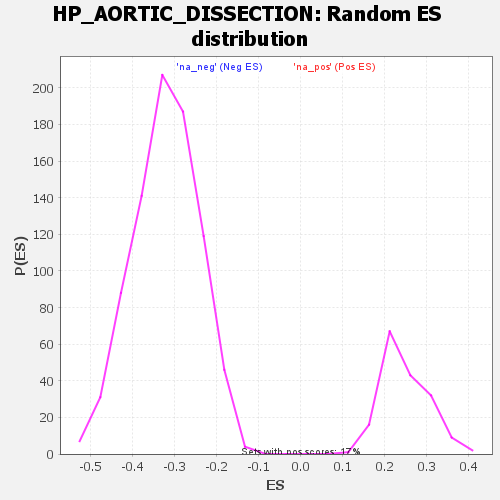

| | | Dataset | all_genes |
| Phenotype | NoPhenotypeAvailable |
| Upregulated in class | na_neg |
| GeneSet | HP_AORTIC_DISSECTION |
| Enrichment Score (ES) | -0.5810261 |
| Normalized Enrichment Score (NES) | -1.8020555 |
| Nominal p-value | 0.0 |
| FDR q-value | 0.066159904 |
| FWER p-Value | 0.976 |
Table: GSEA Results Summary
 Fig 1: Enrichment plot: HP_AORTIC_DISSECTION
Fig 1: Enrichment plot: HP_AORTIC_DISSECTION
Profile of the Running ES Score & Positions of GeneSet Members on the Rank Ordered List
| SYMBOL | RANK IN GENE LIST | RANK METRIC SCORE | RUNNING ES | CORE ENRICHMENT | | 1 | THSD4 | 1481 | 1.328 | -0.0633 | No |
| 2 | IPO8 | 1882 | 1.189 | -0.0638 | No |
| 3 | THSD1 | 2594 | 0.985 | -0.0872 | No |
| 4 | ACTA2 | 3583 | 0.765 | -0.1318 | No |
| 5 | HEY2 | 3948 | 0.689 | -0.1401 | No |
| 6 | COL3A1 | 5066 | 0.492 | -0.1980 | No |
| 7 | SMAD3 | 5403 | 0.427 | -0.2099 | No |
| 8 | TGFB2 | 5527 | 0.404 | -0.2093 | No |
| 9 | SMAD2 | 6552 | 0.220 | -0.2670 | No |
| 10 | EMILIN1 | 6612 | 0.207 | -0.2664 | No |
| 11 | TGFB3 | 7249 | 0.100 | -0.3030 | No |
| 12 | ELN | 7250 | 0.100 | -0.3010 | No |
| 13 | MAT2A | 7991 | -0.032 | -0.3452 | No |
| 14 | HLA-DRB1 | 8047 | -0.043 | -0.3476 | No |
| 15 | TGFBR1 | 8259 | -0.085 | -0.3587 | No |
| 16 | LOX | 9280 | -0.285 | -0.4149 | No |
| 17 | ANGPTL6 | 10337 | -0.519 | -0.4685 | No |
| 18 | SMAD4 | 10991 | -0.676 | -0.4946 | No |
| 19 | ABCC6 | 11890 | -0.907 | -0.5310 | No |
| 20 | PLOD1 | 12073 | -0.961 | -0.5228 | No |
| 21 | SMAD6 | 12302 | -1.034 | -0.5160 | No |
| 22 | HLA-B | 12604 | -1.134 | -0.5116 | No |
| 23 | TGFBR2 | 13750 | -1.568 | -0.5497 | Yes |
| 24 | MFAP5 | 14071 | -1.706 | -0.5351 | Yes |
| 25 | NOTCH1 | 14139 | -1.741 | -0.5044 | Yes |
| 26 | FBN1 | 14733 | -2.027 | -0.4999 | Yes |
| 27 | MYLK | 14788 | -2.060 | -0.4621 | Yes |
| 28 | TGFBR3 | 15118 | -2.281 | -0.4365 | Yes |
| 29 | SLC2A10 | 15202 | -2.344 | -0.3948 | Yes |
| 30 | ROBO4 | 15442 | -2.522 | -0.3589 | Yes |
| 31 | PRKG1 | 15496 | -2.570 | -0.3109 | Yes |
| 32 | ENPP1 | 15753 | -2.806 | -0.2704 | Yes |
| 33 | BGN | 16086 | -3.269 | -0.2253 | Yes |
| 34 | ENG | 16314 | -3.935 | -0.1605 | Yes |
| 35 | P4HA2 | 16428 | -4.282 | -0.0819 | Yes |
| 36 | NKX2-5 | 16451 | -4.421 | 0.0050 | Yes |
Table: GSEA details [plain text format]

Fig 2: HP_AORTIC_DISSECTION: Random ES distribution
Gene set null distribution of ES for HP_AORTIC_DISSECTION